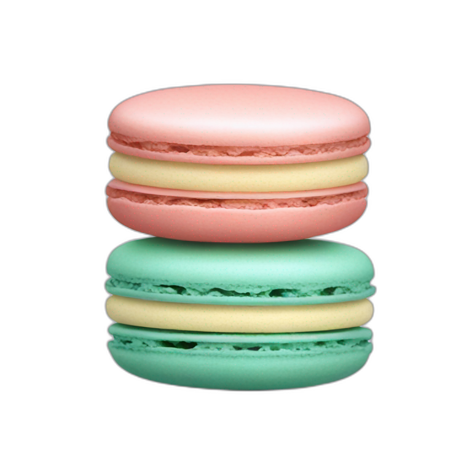
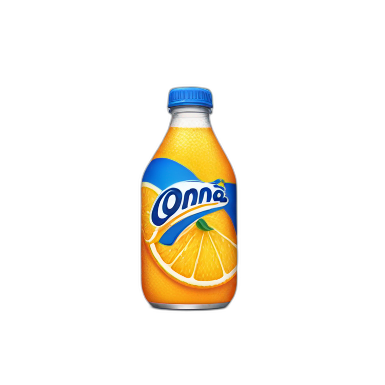
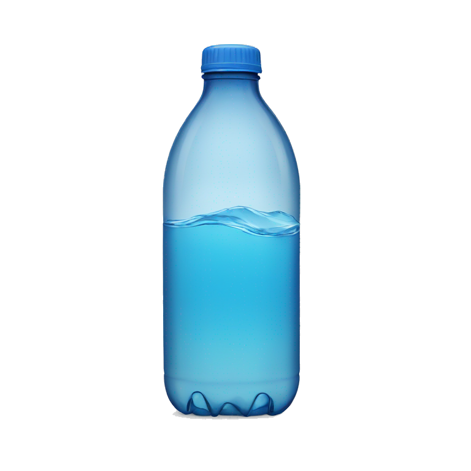

Cosas que tienes que saber antes de venir a Francia :
La comida más famosa :
Las Baguettes 🥖
Los Quesos 🧀
- Camembert
- Roquefort
- Brie
Los Croissants 🥐
Las Crepas 🥞
- Saladas
- Dulces
Los Macarrónes
Las bebidas más famosas :
El vino 🍷
- Blanc
- Rosé
- Rouge
El Champagne 🍾
El Chocolate 🍫
El Orangina
El Agua de Vichy
Cuales son las regiones de Francia ?
Regiones Metropolitanas
Auvergne-Rhône-Alpes
Bourgogne-Franche-Compté
Bretagne
Centre-Val de Loire
Corse
Grand Est
Hauts-de-France
Île-de-France
Normandie
Nouvelle-Aquitaine
Occitanie
Pays de la Loire
Provence-Alpes-Côte d'Azur
Regiones Ultramarinas
Guadeloupe
Guyane
La Réunion
Martinique
Mayotte
Cuales son las ciudades más famosas de Francia ?
A donde viajar en Francia ?
- Paris
- Marseille
- Lyon
- Toulouse
- Nice
- Bordeaux
- Nantes
- Strasbourg
- Montpellier
- Lille
Inscricion :
Quieres apprender más cosas sobre la cultura Francesa ?
Indentificate o Registrate